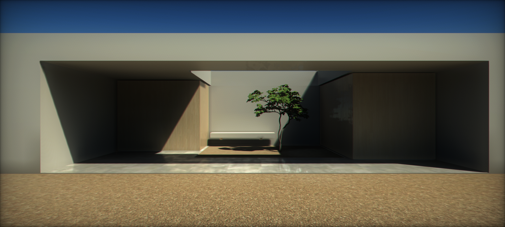
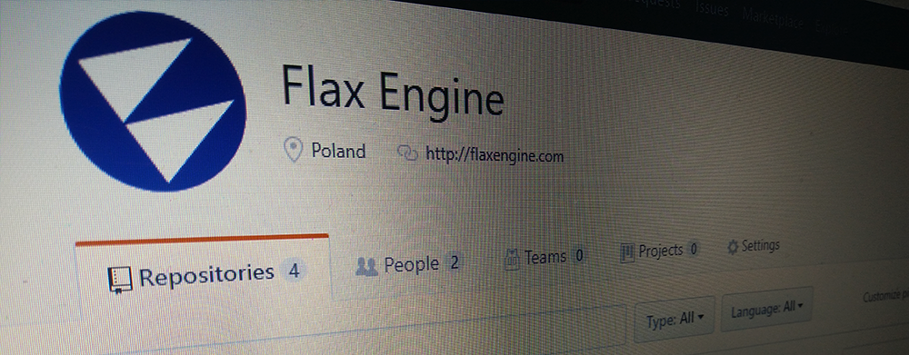

Let's make game engines great again!

We always welcome collaborative participation and community development. We believe that open source projects have huge potential and provide many opportunities to develop better software. With that in mind, we open-source many components of the Flax Engine. This includes editor, C# scripting API, and even this documentation.
Check out the official repositories on a Github:
In this section
Open Source

Flax Engine
The main repository Flax Engine contains full source code of the Flax Engine and Flax Editor with all tools and platforms. You can fork it and edit whatever you need. Modified Engine or/and Editor can be used in Flax games production so it can be very handy to have more control over the engine. Also, any pull requests are welcome.
The repository available on Github is a mirror of our internal Git repository hosted on https://gitlab.flaxengine.com/flax/flaxengine (mirror updated every 5 minutes). We use our internal LFS server for large binary file hosting. The repository contains .lfsconfig file for LFS to work properly but if you encounter issues when pushing changes on your fork try using git push --no-verify or migrate to your own LFS server.
If you want to open the Flax Engine in Visual Studio you might need to install Flax Engine Tools for Visual Studio extension.
Flax Docs
The documentation you're reading right now is hosted as an open project on Github here. You can fork it and edit to contribute to the project or report issues there.